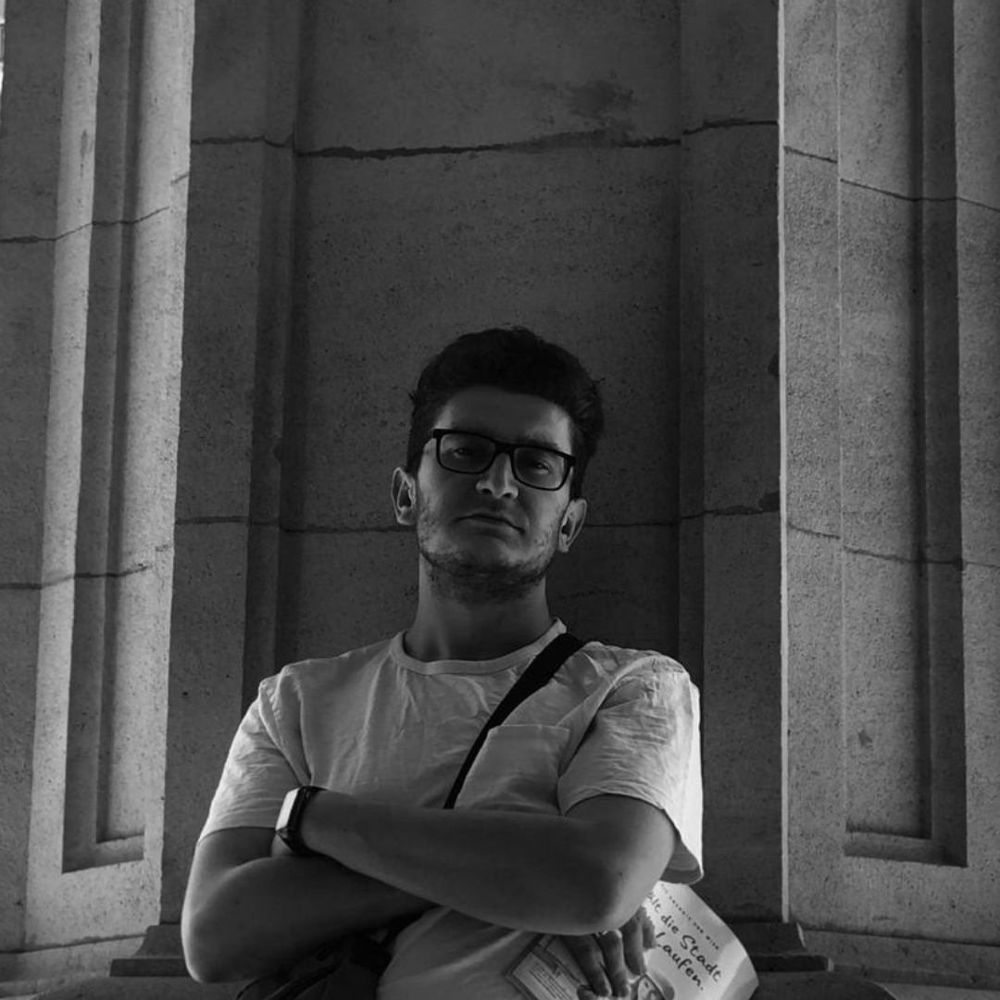

Hi I'm Łukasz Szymański
I'm a self-taught enthusiast of coding, classical music, and
video production.
This space reflects my creative journey where I merge the worlds
of technology, music, and visual storytelling.